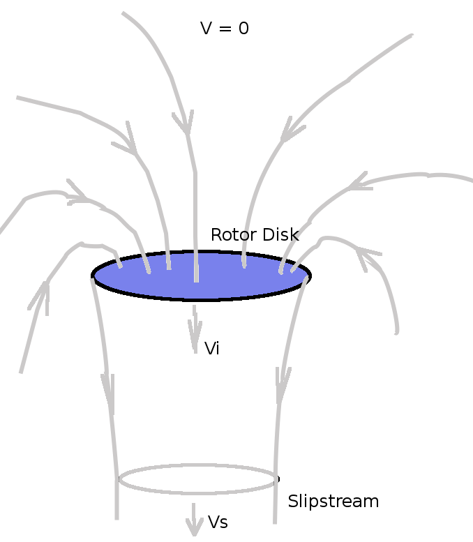
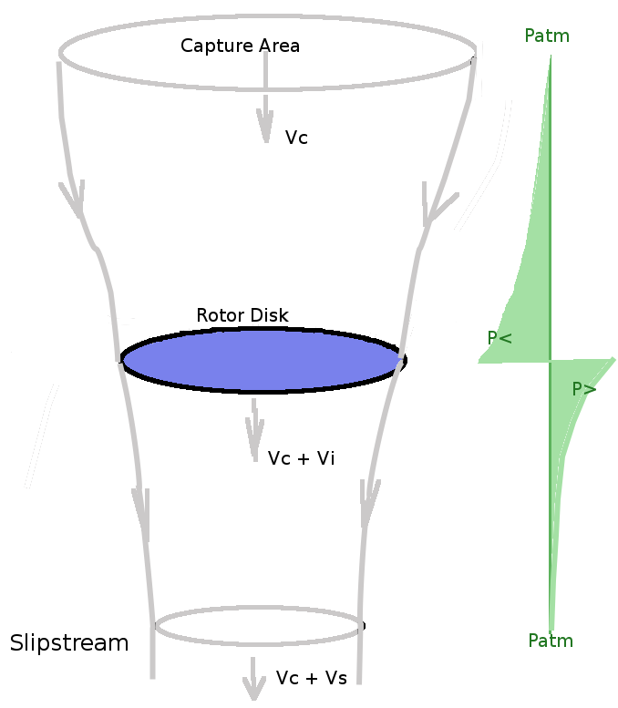
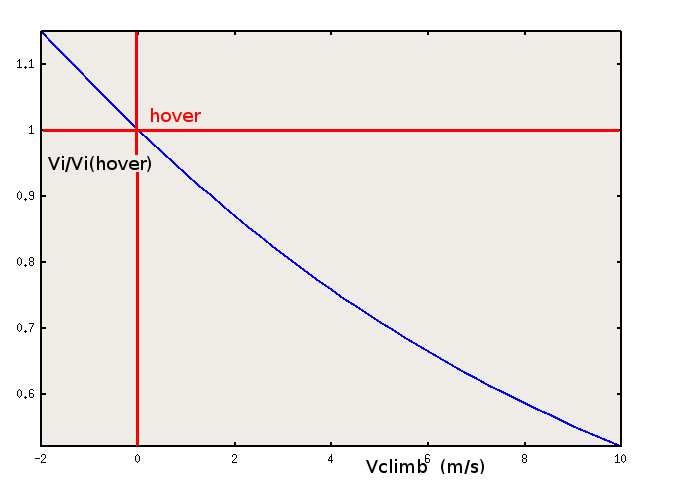
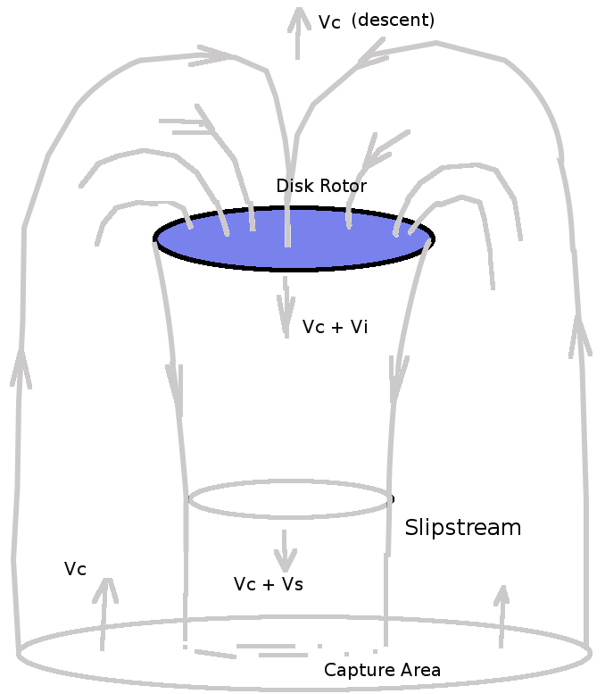
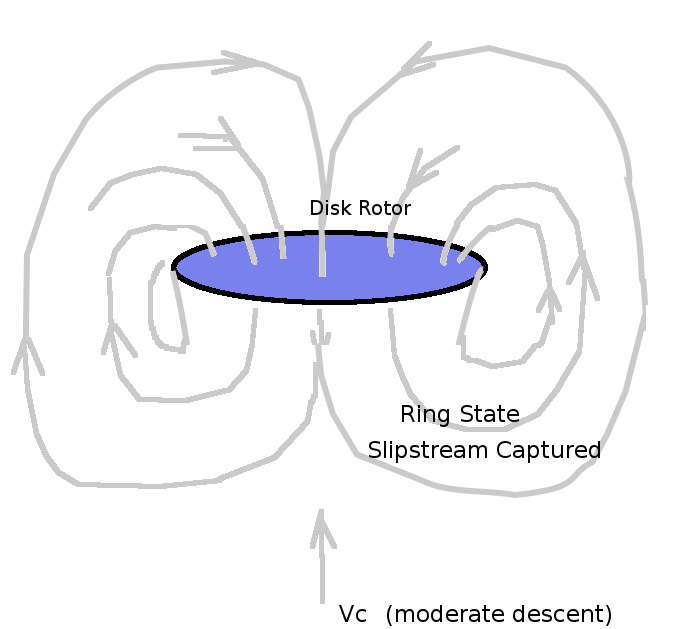
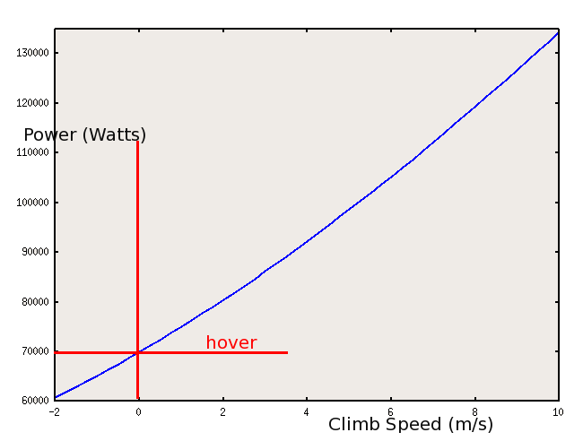

MOMEMTUM DISK ANALYSIS
The helicopter rotor can be idealised as a “momentum disk”. It imparts a uniform velocity (vi) to the airflow creating a change in momentum which will result in an upward thrust (T).
HOVER
For the hover case air is sucked in from all directions so the farfield inlet velocity is effectively zero, accelerated to vi at the disk and then propelled to a final slipstream velocity of vs below.

If the area of the disk is A then the mass flow of air, m, being accelerated is
The change in momentum of the stream will be $ ΔM = m v_s $ and this will be equal to the force produced, the thrust.
The change in Energy per unit time of the stream will be
The work done per unit time on the air by the rotor thrust is
hence
$$ 1/2 ρ A v_i v_s^2 = T v_i = ρ A v_i^2 v_s $$
giving
Hence thrust of the ideal rotor in hover is
As the rotor thrust is required to be equal to the weight of the vehicle, it is possible to use this equation to predict the induced flow required to maintain hover,
CLIMB
For the case where the helicopter is climbing, the rotor will capture flow from a fixed area above and accelerate this to a final slipstream velocity. The momentum balance will be slightly different as the incoming air has an initial momentum due to the helicopter climb speed and the rotor is just augmenting this.
The mass flow rate through the disk will be,
The thrust due to momentum change will be
 The variation of pressure will drop below atmospheric above the disk, increas due to the energy input of the disk and then drop bad to atmospheric in the slipstream.
Applying and Energy balance will again lead to $ v_s = 2 v_i $ so that
Rearranging gives
Solving this quadratic equation for vi gives
or
The required variation in induced velocity for climb is shown in the following figure

Less induced velocity is required for climb as the momentum change applied to a higher initial velocity is more effective.
DESCENT
Descent can be analysed by using a negative value of $V_c$ in the above equations. However there are physical limits on this approach due to the changing flow pattern. As the capture area is now below, problems will arise as the rotor is now capturing its own wake an recirculating it to create momentum change. Eventually at a higher rate of descent the system will become closed and the rotor will simply recycle its own wake ('ring state'). In this condition there is no momentum change and hence no thrust.

A) slowly descending rotor. (Positive Thrust)

B) moderate rate of descent (Ring State, no thrust).

C) fast descent rate ( windmilling )
If the above stable ring flow state can be avoided, a fast descent can be achieved which puts the rotor in to a windmill state. Capture area is still below but rotor is absorbing momentum from the stream and a divergent slip stream appears above. This negative change in momentum will again produce a thrust (a vertical drag). This flow state can be used for autorotation of the blades.
POWER REQUIRED
Engine power is required to be supplied to the disk in order to produce the required thrust. There will be two components of power requirement in this simple analysis. Power is required to produce the momentum change ( $ P_1 = T v_i $ ) and power is required to make the helicopter climb ( $ P_2 = T V_c $ ). Neglecting power losses in transmission, fuselage drag components, blade profile drag power, etc. The the power required for the operation of the ideal rotor will be
Again assuming climb rates are small so thrust approximately equals weight , the variation of power required for different climb rates is shown in the following figure.
